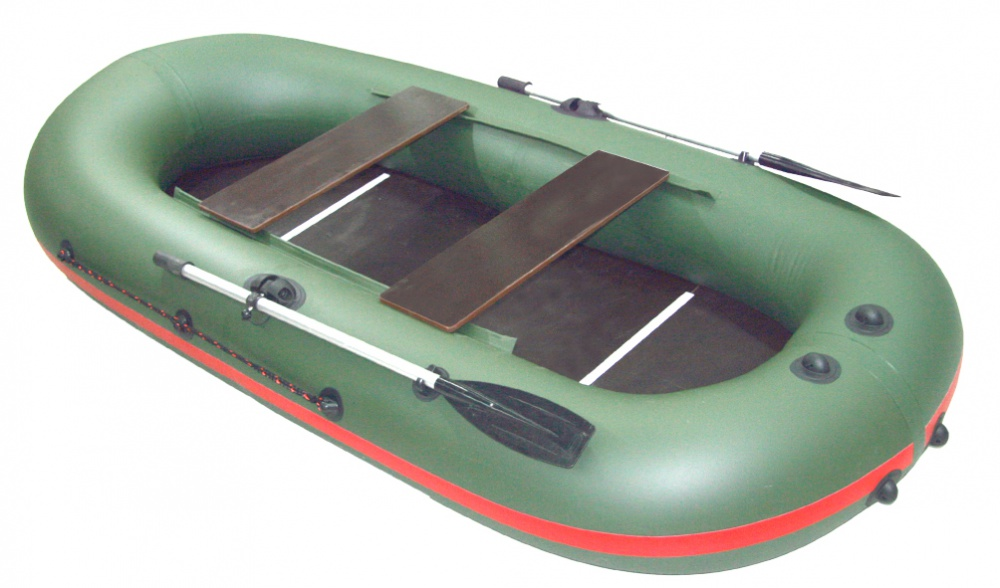

Информация к разделу
Выбор лодки
Как правильно выбрать лодку
Основная идея нашей статьи – помочь охотникам, рыболовам и просто любителям отдыха на воде правильно выбрать надувную лодку. Не будем утверждать, что все советы и рекомендации, представленные в ней, являются стопроцентной истиной, но собранный материал основан на личном опыте, консультаций со специалистами и общении с опытными владельцами лодок, что дает право утверждать о практической ценности данной статьи.
Прочитав, ее вы будете застрахованы от покупки некачественного товара, и вам не придется обвинять недобросовестного продавца в том, что он подсунул вам не ту лодку, которую изначально хотели приобрести.
Главными факторами выбора лодки следуют:
- - она транспортабельна, ее без проблем можно перевозить даже в не большем багажнике малолитражки;
- - у нее высокая грузоподъемность;
- - надувная лодка не требует каких-то особых условий хранения (с ней ничего не случится в гараже или кладовой);
- - ее можно быстро собрать и разобрать;
- - она очень устойчивая, перевернуть или потопить надувную лодку даже если задаться такой целью очень трудно;
- - бывают скоростными и мореходными;
- - среди всех плавательных средств надувная лодка самая доступная по цене.
Прежде чем покупать надувную лодку, попробуйте ответить на ряд вопросов:
- - для каких целей вы будете использовать лодку (для рыбалки, охоты или семейного отдыха);
- - на каких водоемах вы будете чаще всего плавать;
- - желаемая скорость плавательного средства;
- - минимальный и максимальный экипаж надувной лодки;
- - какая грузоподъемность вам нужна.
Полнота и правдивость ответов на эти вопросы поможет вам приобрести именно ту лодку, которая будет максимально удовлетворять все ваши потребности на водоемах. И не стоит тешить себя иллюзиями, что существуют универсальные лодки, которые подойдут на все случаи жизни. К сожалению, таких вариантов еще не придумали.
При покупке лодке никогда не отдавайте инициативу продавцам, всегда предоставляйте максимально полную информацию о том, что вы хотите приобрести. Ведь ваши цели и цели продавца могут кардинально отличаться. Он продаст вам плавательное средство, чтобы получить максимальную прибыль, при этом ему совершенно безразлично насколько данная лодка будет удовлетворять ваши запросы.
Кроме того, есть смысл прислушаться к советам более опытных друзей, почитать отзывы пользователей в интернете, узнать мнение знакомых продавцов, но конечный выбор остается за вами. При этом всегда реально оценивайте свои возможности (состояние здоровья, уровень дохода и т.п.).
Основные виды лодок.
Всегда учитывайте тот факт, что каждая лодка предназначена для своих целей, поэтому не стоит верить категорическим заявлениям, что например сланевые лодки плохие, а килевые – отличное плавательное средство. Для небольшого пруда, озера или речушки лучше всего подойдет плоскодонная лодка без слани, то есть с дном из легкого материала. Это самый простой вариант, который обладает следующими преимуществами: невысокая стоимость; она очень легкая; обладает минимальными габаритами упаковки. Но, к сожалению, в такой лодке нельзя стоять, не позволяет низкая плотность ткани дна (не больше 750 г на квадратный метр материала).
Недостаток выше описанной модели устранили создатели плоскодонной лодки со сланью, оснастив ее дно специальными водонепроницаемыми вставками, которые делают днище плавательного средства более жестким и позволяют в нем стоять. Она тяжелее, чем первый вид лодок, но стоит не намного дороже. Фактически вы доплачиваете, только за возможность стоять в лодке во время вашего путешествия по воде. Следует отметить, что сланевые плавательные средства, благодаря своей мобильности и невысокой цене, являются самыми популярными. Они могут быть как моторными, так и гребными. В последнем случае выделить какие-то явные недостатки плавательного средства невозможно, они практически отсутствуют. Что касается моторных лодок, то в этом случае все намного сложнее. Сланевые вставки придают дну лодки поперечную жесткость, совершенно не влияя на продольную. Поэтому представленная конструкция не обладает достаточными гидродинамическими показателями. Набирая определенную скорость, такое плавательное средство входит в резонанс с волной и перестает набирать скорость, даже в том случае, если двигатель еще имеет определенный запас мощности.
Кроме того, через приподнятый нос лодки воздух проходит под дном и выходит сзади, мешая нормальной работе мотора. В это время двигатель набирает обороты «вхолостую». Для лодок со сланевым дном нет смысла покупать мощный мотор, они не являются высокоскоростными. Вполне достаточно поставить на нее электромотор или бензиновый двигатель мощностью до 5 л.с.
Можно повысить гидродинамические показатели таких лодок при помощи более широких сланей. Но в этом случае мы потеряем два главных ее преимущества – невысокую стоимость и вес. Некоторые владельцы сланевых лодок используют фанерные вставки на днище. Это позволяет повысить скоростные показатели плавательного средства, кроме того, с такими вставками по лодке можно свободно ходить. Но при этом увеличивается ее вес и на сборку уходит намного больше времени. К недостаткам плоскодонных лодок относятся плохая мореходность и управляемость. Все представители данного вида плавательных средств (как жесткие, так и надувные лодки) имеют боковой снос при входе в поворот. Некоторые продавцы советуют приклеить к дну надувной киль, но на практике получить в результате этого продольную жесткость или улучшить управляемость не получится.
Плоскодонка не способная резать волну, она просто на ней качается. Поэтому передвигаться на такой лодке на больших водоемах при сильной волне очень трудно и некомфортно. Приобретая сланевую лодку, обязательно обратите внимание на расположение вставок. Чем ближе они подходят к транцу, тем будут лучшие скоростные показатели (не будет образовываться воздушный пузырь, который препятствует работе двигателя). Следующий вид плавательных средств – килевые лодки.
Они имеют намного лучшую мореходность и управляемость, чем плоскодонки. За счет хороших гидродинамических показателей и более жесткой конструкции килевые лодки намного скоростнее, чем их сланевые собратья, что позволяет устанавливать на них более мощные моторы. Промежуточным вариантом, как по весу, так и по жесткости конструкции между сланевыми плавательными средствами и килевыми с жестким настилом является килевая лодка с надувным дном.
Благодаря надувному настилу данный вид плавательных средств значительно легче, чем килевая лодка с жестким днищем. Она намного компактнее, собрать такую лодку и даже спустить ее на воду вполне под силу одному человеку. Но стоимость такого плавательного средства намного выше, чем килевой лодки с жестким настилом. Несмотря на этот факт, данный вид лодок охотно покупают как для семейного отдыха, так и для рыбалки на больших и средних водоемах.
Надувной настил представляет собой две параллельные основы, которые изготовляются из специального материала и дополнительно укрепляются тесно переплетенными нитями, что позволяет выдерживать достаточно высокое давление. Несмотря на все вышеперечисленные плюсы, данный вид лодок кроме высокой цены имеет и другие недостатки.
Прежде всего, необходимо отметить, что, несмотря на все старания конструкторов, жесткость килевой лодки с надувным настилом далеко не идеальна. А это сказывается на скоростных показателях и грузоподъемности. Поэтому оборудовать ее действительно мощным мотором, таким как позволяет конструкция килевой лодки с жестким днищем, не получится. Кроме того, у плавательных средств представленного типа иногда наблюдается образование воздушного пузыря, который, как мы уже говорили, препятствует нормальной работе мотора.
Рассмотрим отдельно каждый вид тканей
Очень многие люди обобщают все надувные лодки, называя их «резиновыми». Но это не правильно, такие плавательные средства постепенно уходят в прошлое. Резиновые лодки требуют тщательного ухода, они тяжелые. Кроме того, этот материал имеет слабую механическую стойкость, подвержен воздействию ультрафиолета, агрессивной среды, а при интенсивной эксплуатации прослужит недолго. Единственный плюс резиновой лодки – ее невысокая стоимость.

Сегодня большая часть надувных лодок производится из поливинилхлорида. Это синтетический материал, который обладает повышенной механической прочностью, слабо подвержен воздействию ультрафиолетовых лучей, нормально переносит агрессивную среду и морскую воду. Кроме того, такие лодки не гниют и за ними легко ухаживать. Цены на них очень демократичны. К недостаткам лодок из ПВХ относится, тот факт, что они теряют эластичность при минусовых температурах. Но, как показывает практика, в таких условиях очень редко эксплуатируются плавательные средства. Учитывая все характеристики лодок из ПВХ, можно сказать, что они являются оптимальным выбором как для семейного отдыха на воде, так и для рыбалки или охоты.
Лодки из ткани на основе каучука из-за своей высокой стоимости не завоевали особой популярности в нашей стране. Они больше подойдут для эксплуатации в регионах с жарким климатом, а в умеренных поясах никто не будет переплачивать деньги за плавательное средство, которое обладает теми же свойствами, что и лодка из ПВХ.
При выборе лодке очень внимательно читайте ее технические характеристики и главное – анализируйте их. Например, лодка длиной больше 3-х метров, грузоподъемностью 750 кг рассчитана на четырех человек. Как ее можно использовать на практике? Прежде всего, необходимо отметить, что мало кто будет загружать лодку до 750 кг. Второе – просто покататься в хорошей компании по красивому водоему четыре человека на этом плавательном средстве смогут, а вот ловить рыбу на нем могут не больше двух людей.
Напомним, что каждая лодка должна покупаться для конкретных целей. И каждый параметр плавательного средства имеет свои, как положительные, так и отрицательные стороны.
Длина лодки. Естественно, что чем длиннее лодка, тем лучше она держит волну, в ней много места, что позволяет пассажирам чувствовать себя комфортно. Но когда длина лодки приближается к 4 метрам, она начинает терять жесткость. В широкой лодке больше места и она более устойчивая, но в тоже время, когда ширина начинает приближаться к длине, плавательной средство теряет скорость и управляемость.
Вес надувной лодки очень важный показатель, так как она предназначена для переноски, а если вы ездите на рыбалку в одиночку, то этот параметр будет для вас самым главным. Что касается RIP-ов, то для них вес особой роли не играет, так как они транспортируются при помощи трейлера. Количество мест в лодке рассчитывается на основании ее грузоподъемности и требованиям к безопасности пассажиров. Кроме того, этот показатель зависит от ваших целей, например, на рыбалке в четырехместной лодке будет удобно, только двоим.
От диаметра баллона лодки во многом зависит ее грузоподъемность, устойчивость и плавучесть, а также комфорт пассажиров (сиденья будут находиться выше от настила). С другой стороны такая лодка теряет полезную площадь и прибавляет в весе.
Мощность мотора надувной лодки. Очень важно чтобы характеристики мотора соответствовали возможностям вашей лодки. Скоростной потенциал плавательного средства можно максимально выжать только с мощным мотором, главное при этом, чтобы он не доставлял вам дискомфорта своими габаритами. И последний совет. Никогда не устанавливайте на лодку мотор с мощностью, меньшей, чем рекомендуют производители. При неблагоприятных погодных условиях, со слабеньким силовым агрегатом, вы можете стать заложником стихии.